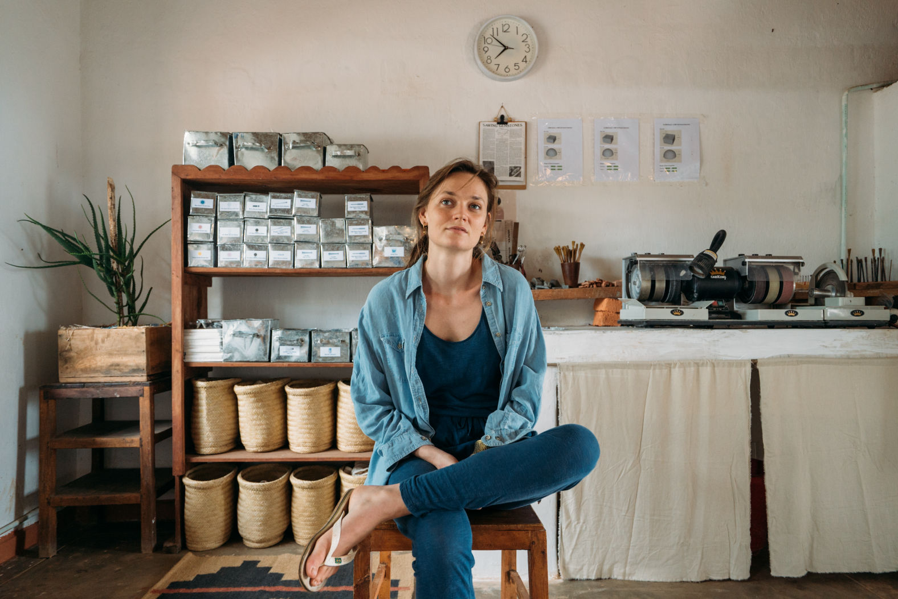

So what is a videographer? Some videos immediately get peoples attention, make them care, and even get them to act. Other ones are just forgotten.
Why does this happen? It’s not luck or expensive equipment. It’s all about what a videographer does behind the scenes, the plannning and choices they make.
Imagine two videos of the same event, one makes you feel emotional and remember the people, the other feels flat and awkward. How did one team get it right?

Hi! We’re Katy and Eugene, filmmakers and videographers with over eight years of experience. We’ve filmed everything from grassroots projects to larger clients like CNBC.
We’ve learnt that videography isn’t just about cameras it’s about storytelling, planning, and connecting with the audience. So what is a videographer? It's someone who can make even a short video of someone preparing a meal, tell a story, if you know what to look for and how to frame it.
Imagine trying to film a wedding without a shot list. You might miss the vows, the first kiss, or the cake-cutting moment. A professional videographer plans everything in advance: shots, sequences, lighting setups, and timing.
So what is a videographer? It's someone whose careful planning turns scattered footage into a story. It makes sure that the moments your audience will care about are captured.
And once the plan is in place, the magic of filming really begins…


Filming isn’t just about aiming a camera. Every shot involves decisions about lighting, color, sound, and composition. For example, a warm-lit close-up can make a speaker feel approachable, while a wide shot can show the environment and context.
We once filmed a small eco-lodge. By carefully framing the team that worked there, the beautiful surroundings and organic vegetable garden, viewers could feel the calm mornings on the mountain top and understand the lodge’s sustainable practices, in a short clip.
So what is a videographer? It's someone whose choices guide the viewer’s emotions. You don’t just watch the video you experience it.
And then comes the stage that often makes or breaks a video, editing…


Raw footage is like a blob of clay, editing gives it shape. Cuts, pacing, sound effects, and music all change how viewers interpret the video.
For instance, in a 5-minute interview, carefully timed cuts and music changes can put emphasis on important parts without making the video feel rushed. A simple graphic can illustrate ideas and keep the viewer’s attention.
So what is a videographer? It's someone whose well-edited video doesn’t just give information, its information that sticks in peoples mind.
Even perfect editing can fall short if the video ignores who’s watching…

Here’s the step many videographers skip, understanding the audience. Who will watch this video? What do they care about? How should they respond?
We’ve filmed for nonprofits, small businesses, and eco-projects, tailoring our videos to highlight what matters most to the audience.
So what is a videographer? It's someone whose strategy ensures the video connects with the right people, not just anyone scrolling by.
And then, the secret ingredient that makes videos amazing…


Facts alone don't stay in peoples minds, stories do. A skilled videographer finds the narrative within your brand or event, challenges, wins, emotions, and small personal moments.
When filming an artisan weaving rugs, capturing hands at work, the focused expression, and a short anecdote made the video relatable. Viewers remember the artisan and feel compelled to support their work.
So what is a videographer? It's someone whose storytelling turns videos from something people watch into something people care about and share.
So, what is a videographer really? They plan, film, edit, and tell stories while keeping the audience in mind.
While some videographers might stop at filming, others go a bit further. They research the audience, understand their pain points, and highlight the benefits of the brands product or service. This ensures the right people understand why you matter and what to do next.
Even if you’re not hiring a videographer, knowing these steps can help you:
Appreciate the craft behind the videos you watch.
Evaluate which videos effectively engage their audience.
Recognize how storytelling and strategy influence results.
If you’re looking for a videographer we’d love to help. We’re Katy and Eugene and we make videos that tell your story and get results. From research to planning, filming to editing, we handle it all so you can relax and enjoy the process. You can email us here:
katy@munjiri.com

Brand Video Production
Social Media Video Production
Nature Video Production
Creative Video Productions
Charity Video Production
Drone Videographer
Event Video Production
Product Video Production
Travel Video Production
Learn Video Making
Video Storytelling
Video Making Tips
Video Marketing & Social Media Strategies
Nature Stories
Behind the Scenes
Client Stories
Locations & Travel
Location
Based in Portugal and South Africa, offering video production services worldwide.
Email: katy@munjiri.com
Get updates and free resources.